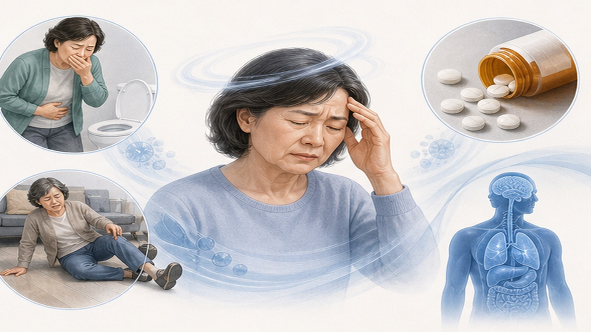
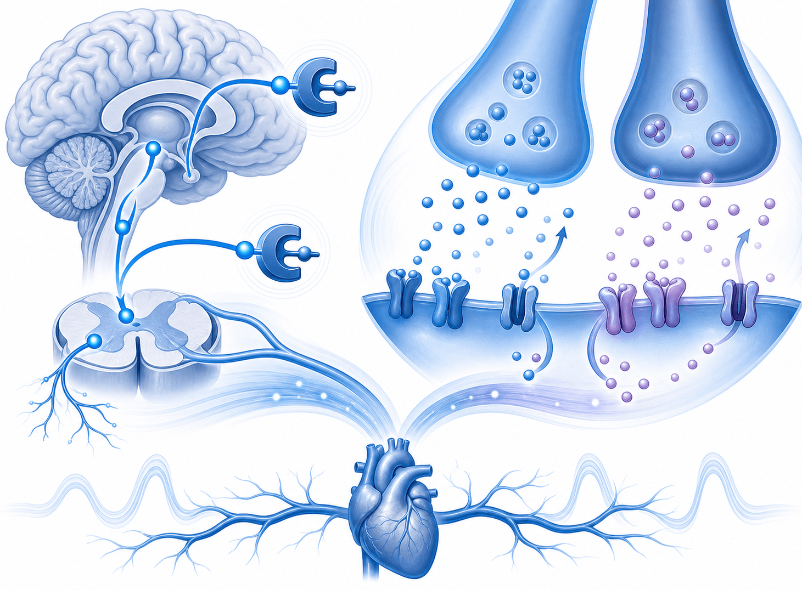

트라마돌,
이제 1차 약제에서 빼야 할 때
BMJ Meta-analysis 2026.05 — 만성 통증에서 트라마돌은 임상적 의미 있는 효과 부재 + 심혈관 사건·골절·저나트륨 등 중대 부작용 위험 증가. 1차 진료 처방 재검토 필요.
한 문단·세 숫자로 요약
통증 감소 효과는 MCID 미만, 부작용 위험은 통계적으로 의미 있게 증가 — 위험-이익 역전
MCID 10 mm 미달
통계적 유의 증가
1차 약제 권고 부적합
왜 트라마돌 재평가가 필요한가
"NSAID 부작용 회피용 약한 오피오이드"라는 인식 — 실제로는 SNRI+오피오이드 이중 작용 + 복잡한 약리학
기존 인식과 실제
- "약한 오피오이드"라는 통념 — NSAID 부작용 회피·노인·심장약 복용자에게 1차로 흔히 처방
- 실제 약리학 — Mu-opioid 수용체 + 세로토닌·NE 재흡수 억제(SNRI) 이중 작용. 단순한 약 X
- CYP2D6 다형성 — ultra-rapid metabolizer에서 호흡억제·중독 위험 ↑. 한국인 다형성 약 1-2%
- 한국 처방 현황 — 트라마돌·복합제(울트라셋·트라마셋) 의원 처방 매우 흔함
- 2019 FDA 안전 경고 — 호흡억제·세로토닌 증후군·중독 위험 강조
- BMJ 메타분석 — 누적 RCT 결과로 위험-이익 재평가, 1차 약제 권고 부적합 결론
BMJ Systematic Review & Meta-analysis
만성 비암성 통증 RCT 다수 통합 · 효과 (VAS·NRS) + 안전성 (심혈관·골절·저나트륨·중독) 종합 평가
통증 효과 — MCID 미달 (임상적 의의 미약)
VAS 0–100 mm 척도. 트라마돌 −7, 위약 −4 → 차이 −3 mm. MCID 10 mm에 한참 미달.
안전성 — 5가지 의미 있는 위험
위약·NSAID 대비 통계적 유의 증가. 노인·심혈관·SSRI 복용자에서 특히 ↑

기전 — 이중 작용 약물의 양면성
Mu-opioid 수용체 + 세로토닌·NE 재흡수 억제(SNRI) — 단순한 진통제 아닌 신경전달 다중 조절제

이중 작용의 임상적 함의
- 약한 진통제 아님 — 단순 NSAID 대체로 인식되지만 신경계 다중 작용
- SSRI/SNRI 병용 위험 — 세로토닌 농도 위험 수준 ↑ → 세로토닌 증후군
- CYP2D6 의존성 — 활성 대사물(O-desmethyltramadol)의 mu-opioid 친화도 200×. 개인차 큼
- 약물 상호작용 多 — CYP3A4·CYP2D6 동시 substrate, MAOI 금기
- 의존성 기전 — SNRI 성분이 의존성 강화 (단순 opioid 의존성 + 항우울제 금단 유사)
고위험군 6가지 — 1차 약제 절대 회피
노인·심혈관 위험·SSRI 복용·신장·간기능 저하·CYP2D6 변이 — 처방 전 반드시 확인
👴 65세+ 노인
낙상·골절 위험 가장 큼. 다약제·인지 기능·신장 ↓로 위험 증폭. 1차 약제 피하기.
🫀 심혈관 위험군
관상동맥질환·뇌졸중·HF·QT 연장. BMJ 메타에서 MACE 위험 ↑ 신호 분명.
💊 SSRI/SNRI 병용
세로토닌 증후군 응급 — 발열·근경직·의식변화. 우울증 환자에 매우 흔한 조합.
🩺 신장 기능 저하
eGFR <30: 활성 대사물 축적 → 과량·호흡억제. 용량 조정 또는 회피.
🫁 간기능 저하
CYP3A4·CYP2D6 대사 저하. 발작 위험 ↑. Child-Pugh B-C에서는 회피.
🧬 CYP2D6 변이
Ultra-rapid metabolizer (소수): 호흡억제 폭증 위험. 한국인 1-2% 추정. 무증상 모름.
기존 처방 환자 — 재검토 우선순위
갑작스런 중단 X → 점진적 감량 + 대안 마련. 환자 안내·동의 필수
🚨 즉시 재검토
- 장기 복용 (3개월+) — 만성 비암성 통증으로 트라마돌 또는 울트라셋/트라마셋 지속 복용
- 고용량 (300+ mg/일) — 의존성·중독 위험 ↑. 호흡억제·발작 위험
- SSRI/SNRI 동시 — 우울증 또는 신경병성 통증 다중 약물 환자
- 65세+ 노인 — 낙상·골절 위험 + 다약제 polypharmacy
- CV 동반 — 관상동맥·심부전·뇌졸중 병력
✅ 환자 상담 시 메시지
- "이 약은 약한 약이 아닙니다" — 환자 인식 교정
- "통증 완전히 잡히는 게 아닙니다" — 효과 한계 솔직히 안내
- "점진적으로 줄여 가겠습니다" — 갑작스런 중단 아님 안심
- "비약물 치료가 1차" — 운동·물리치료·인지치료 강조
- "NSAID 또는 다른 약으로 대체" — 위장·신장 평가 후 가능
대안 4단계 전략
비약물 → NSAID(평가 후) → 신경병성 통증 약 → 다학제 의뢰. 트라마돌은 마지막 선택.
유산소 운동 주 150분 · 인지행동치료 · 물리치료 · 자기관리 교육. 만성 통증 1차 근거 가장 강한 개입.
위장(H. pylori·궤양)·신장(eGFR)·심혈관(고혈압 조절) 평가. 단기 사용, PPI 병용. COX-2 선택 시 CV 위험 고려.
신경병성 통증(당뇨신경병증·대상포진후·섬유근통): 1차 가바펜틴/프레가발린 또는 둘록세틴. SSRI/SNRI 병용 위험 확인.
위 3단계 실패 시 통증 클리닉·정형외과·재활의학과 의뢰. 강한 오피오이드 직접 처방보다 안전.
한계와 주의사항 8가지
메타분석의 한계와 임상 적용 시 고려사항 — 균형 잡힌 해석 필요
1차 진료 Take-home — 4가지 핵심
트라마돌 처방 패턴 즉시 변경할 임상적 요약